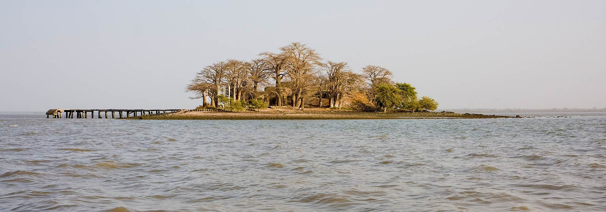

The Gambia
The Gambia is the smallest country on mainland Africa, with an extent of about 330 km east to west, and less than 50 km north to south. It is a former British colony, forming an enclave within Senegal, a former French colony. The Gambia is one of the most densely populated countries in West Africa. The highest concentration of people is around the increasingly urbanized landscape spreading outward from The Gambia's capital, Banjul.